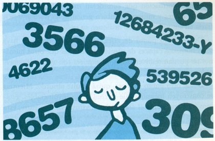
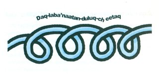

Todos utilizamos claves secretas. Si encendemos el teléfono móvil, nos pide un pin. Para acceder al correo electrónico, utilizamos una contraseña. Al sacar dinero del cajero automático con una tarjeta, necesitamos teclear un número personal.Normalmente, las claves no se las comunicamos a nadie que no sea de absoluta confianza. Los bancos toman grandes precauciones cuando envían números secretos a sus clientes; si quieres comprobar cuáles son, no tienes más que preguntar. ¿Imaginas qué ocurriría si la gente tuviera la clave privada de las cuentas del supermillonario Bill Gates, por ejemplo?
Después de los bancos, quienes guardan más secretos son los militares y los espías. Hace dos mil años, cuando Julio César enviaba mensajes a sus generales lo hacía utilizando un código cifrado que había copiado de los egipcios, basado en cambiar unas letras por otras, siguiendo una regla de sustitución que variaba con cada mensaje. Aunque el sistema era bastante primitivo, casi un juego, resultaba eficaz, entre otras cosas, porque entonces no había mucha gente que supiera leer y escribir.
En este código de sustitución, el mensaje «NECESITAMOS REFUERZOS» se convertía, por ejemplo, en «FWUWLAMSEHLSKWXNWKRHL», desplazando ocho lugares a la izquierda la posición de las letras y utilizando la letra S como espacio, para complicar un poco las cosas. Quien recibía el mensaje debía conocer la clave, que podía variar cada poco tiempo.
Con el tiempo, los códigos se hicieron cada vez más complicados y descifrar mensajes secretos comenzó a requerir mucho tiempo y trabajo. A partir del siglo XV, muchos científicos y nobles se entretenían en enviarse mensajes codificados, por el simple capricho de desafiar a los contrincantes. A veces se añadían tintas invisibles, diagramas o dibujos simbólicos, a los que se asignaba un papel especial. Eran tiempos en los que se buscaba la piedra filosofal, que convertiría en oro cualquier metal, y por toda Europa circulaban documentos que solo los expertos en esos símbolos sabían descifrar.
Pero los mensajes secretos más secretos eran los de los militares y los espías. Desde aquella época, raro era el ejército que no contara con encargados que codificaran y descodificaran mensajes, inventando claves cada vez más complejas. Muchos correos, a pie, a caballo o en barco, eran perseguidos para interceptar sus cartas en clave. Algunas tardaron años en descifrarse, y en el siglo XIX el escritor Edgar Allan Poe, un experto en criptografía, consideraba que nunca podría escribirse un mensaje que no fuera descifrado por otro ser humano.
La llegada del teléfono y de la radio supuso una ventaja para los espías, pero también para los contraespías. Los primeros podían enviar mensajes secretos a gran distancia e instantáneamente, pero era difícil impedir que los segundos intervinieran la línea u oyesen la radio. Además, quien enviaba los mensajes nunca sabía si el mensaje había sido interceptado.
Eso llevó a buscar códigos y sistemas de cifrado cada vez más complicados, que se hicieron monstruosos. Durante la Primera Guerra Mundial, entre 1914 y 1918, los alemanes manejaban un diccionario de claves que tenía cerca de treinta y cinco mil palabras y reglas distintas. Incluso cuando se conocían las claves, descifrar un mensaje era una tarea muy costosa. Dependiendo del día, de la hora o de ciertas características especiales, como si el número de caracteres era o no múltiplo de cinco, una frase como «LAS GAVIOTAS VUELAN MUY ALTO» se podía convertir en «MAÑANA ATACAREMOS DESPUÉS DEL BOCADILLO» o «SE HAN ESTROPEADO LOS CAÑONES».
Como siempre, llegan las máquinas
Poco antes del comienzo de la Segunda Guerra Mundial, los alemanes construyeron una máquina de escribir especial, a la que llamaron Enigma, que convertía un mensaje cualquiera en un código secreto mediante un dispositivo electrónico.
Las claves eran tan variadas y cambiantes que solo había una posibilidad entre muchos trillones de adivinarla por casualidad. Comenzó entonces una verdadera batalla en las sombras. Por un lado, los espías ingleses intentaron robar una Enigma. Por otro, los militares pidieron ayuda a los científicos para construir máquinas capaces de descodificar mensajes realizando cálculos y combinaciones miles de veces más rápido que cualquier ser humano. Así es como surgió uno de los primeros ordenadores, llamado Colossus.
Con ayuda de máquinas o sin ellas, descodificar mensajes cifrados fue fundamental para inclinar las batallas hacia uno u otro bando. Los japoneses, por ejemplo, utilizaron un sistema con cuarenta y cinco mil números de cinco cifras, cada uno de los cuales codificaba una palabra, una letra o una frase. A pesar de su dificultad, estos mensajes fueron descifrados por los primeros ordenadores; era una cuestión de potencia y rapidez de cálculo. Gracias a eso, los estadounidenses se anticiparon a uno de los ataques japoneses, lo que decidió el curso de la guerra.
Desde esa época comenzó una guerra sorda entre los espías, diplomáticos y militares, cada vez con ordenadores más potentes y rápidos. Si un bando disponía de una máquina capaz de generar claves complicadas, el otro trataba de hacerse con otra más potente capaz de descifrarlas. La cuestión que todos los científicos se preguntaban era: ¿Existirá algún procedimiento para codificar un mensaje que no pueda ser descifrado por ninguna máquina, por poderosa que sea, al cabo de un tiempo razonable? (Digamos, ¿mil años?).
Antes de responder esta pregunta, es interesante contar una anécdota para saber cómo funcionan las claves secretas.
Mensajes indios
También durante la Segunda Guerra Mundial, a alguien se le ocurrió una idea genial: pedir ayuda a los indios dakota para codificar mensajes secretos. El asunto era sencillo. Alguien dictaba a un indio dakota una orden como, por ejemplo, «MAÑANA LLEGA EL BARCO CON PROVISIONES». El indio la traducía a su idioma y la dictaba por teléfono. Pongamos por caso, se leía como «DAQ-LABA'NAATAN-DULUQ-CHEETAQ». Al otro lado del teléfono había otro indio dakota que escuchaba el mensaje y lo volvía a traducir al idioma original.

¡Era asombrosamente simple! Ya no importaba que el enemigo escuchara los mensajes, porque solo un indio dakota podía descifrarlos. La ventaja del lenguaje dakota era triple: solo había indios dakota en Estados Unidos, era un idioma que nunca se había escrito y solo lo conocían los dakota. Esto es lo que se llama un mensaje público: no importa que lo oiga la gente porque casi nadie lo entendería.
Secuestrar a un indio dakota se convirtió para el ejército japonés en algo tan obsesivo como para los ingleses robar una Enigma, porque solo un dakota podía entender ese mensaje público. Curiosamente, gracias a los códigos cifrados esos soldados indios se convirtieron en personas valiosísimas en Estados Unidos, cuando siempre habían estado marginados. Hay una película, llamada Windtalkers, que cuenta precisamente la historia de uno de estos indios.
A través de los indios dakota se comprendió que el meollo del secreto de un mensaje secreto no está en que se intercepte, sino en que no haya nadie (¡ni nada!, ¡ni siquiera una máquina!) que pueda descifrarlo, a no ser que se conozca la clave. Y aquí es donde volvemos a la pregunta: ¿Es posible codificar un mensaje público que no sea descifrado ni siquiera por un ordenador potente, al cabo de mil años de cálculos superrápidos?
Aquí intervienen las matemáticas
Estamos tan acostumbrados a los números que muchas veces no nos detenemos a pensar en las posibilidades que encierran.
Si diez personas deciden sentarse en un banco del parque con todas las combinaciones posibles, el número de formas distintas en que pueden hacerlo es de 3 628 800. Si lograran hacer un cambio por segundo, sin dormir, comer ni parar por ningún motivo, eso les llevaría nada menos que cuarenta y dos días.
Si en lugar de ser diez, son veinte personas, y deciden hacer todas las combinaciones posibles, llegarán al pasmoso número 2 432 902 008 176 640 000, que los matemáticos leen en notación científica como 2,4·1018 y que los mortales llamamos, sencillamente, «dos trillones y medio». Para que esas veinte personas consigan sentarse de todas las formas posibles, a razón de un cambio por segundo, necesitaríamos 77 146 816 596 años. O sea, ¡unas dieciocho veces la edad que tiene el planeta Tierra!
Si el número de personas asciende a 100, el número de combinaciones posibles asciende a 9,33·10157 y el número de años sube a 2,96·10150. Realmente, en este punto hemos perdido toda capacidad de imaginación. No hay nada en el universo, ni siquiera electrones suficientes, que justifique utilizar ese número en algo contable…
A partir de 1015, los matemáticos consideran que ese número es «grande». Es cierto que los superordenadores actuales son realmente potentes y que pueden realizar trillones de operaciones por segundo. Pero aunque una máquina fuera capaz de efectuar sextillones de cálculos por segundo, aun trabajando durante miles de años, no podría encontrar algo que está bien escondido. La clave está en ocultarlo bien.
Las primeras claves numéricas
Si alguien codificara letra a letra El Quijote, siguiendo un sistema como el utilizado por Julio César, descifrarlo sería un juego largo e incómodo, pero sencillo. También lo sería si sustituyera cada letra por un cierto número. Todos los códigos de sustitución y desplazamiento son fáciles de destripar con solo hacer un análisis estadístico de letras. En español, la E es la que aparece más veces, seguida de la A, por ejemplo.
El asunto se complica si sustituimos y ocultamos siguiendo una clave y una operación. Por ejemplo, la frase «En un lugar…» se puede sustituir por «112028201828133425». Hasta aquí, se ha hecho una simple sustitución, fácil de descubrir. Pero si esa serie se divide en grupos de nueve (11202820|828133425) y después se le suma una clave secreta (pongamos por caso 740321821|896110942), eliminando la primera cifra de cada grupo si al sumar se obtienen más de nueve cifras, se obtiene el mensaje 852350022|724244367.
Aquí ya no hay regla estadística que valga. Si se conoce la clave, lo que hay que hacer para restaurar el mensaje original es primero restar y luego descodificar. Pero si no se conoce la clave, descifrar el mensaje es un quebradero de cabeza. En esta doble operación de sustituir y operar se basaban muchos códigos secretos de la época en que no había ordenadores.
Sin embargo, para un ordenador descifrar este mensaje resulta una tarea relativamente sencilla. Es cuestión de probar miles de millones de combinaciones y aplicar reglas estadísticas, y una máquina suma y multiplica cifras a una velocidad pasmosa, con lo que, al final, destripa cualquier mensaje de este tipo.
Cuando se pidió ayuda a los matemáticos, estos pensaron en una tarea difícil incluso para un ordenador. E inmediatamente recurrieron a los números primos.
La dificultad de los grandes primos
Como es sabido, un número primo es aquel que no tiene más divisores que sí mismo y la unidad. Para saber si un número es o no primo (y son candidatos teóricos los que no acaban en 0, cifra par o 5), un procedimiento eficaz consiste en probar a dividirlo por todos los números enteros que sean impares y menores que su raíz cuadrada. Para 2011, por ejemplo, habrá que hacer 21 tanteos; al no encontrar ningún divisor, diremos que 2011 es primo.
Hacer 21 divisiones y comprobaciones es muy simple para un ordenador. Tarda apenas un microsegundo. El asunto lo complicamos un poco si queremos comprobar si el número 2467043539 es o no primo, porque habría que hacer 24 834 divisiones. Con un número de diecisiete dígitos, el número de divisiones asciende a 150 millones. Y si el número tiene cien cifras, los ensayos son ya 1050. Todavía no entramos en el territorio de los números grandes, pero falta poco…
Con números de 128 o de 256 cifras, el asunto se complicará enormemente. (En realidad, las cosas no son del todo así. Es mucho más sencillo saber si un número es primo que calcular cuáles son sus divisores, porque los matemáticos han desarrollado procedimientos muy poderosos que no viene a cuento describir aquí). Con esos métodos, saber si un número impar de 200 cifras es primo (en caso de que lo sea) requiere varios minutos de tiempo en un superordenador. Pero determinar cuáles son sus dos divisores de 100 cifras requeriría en esa misma máquina ¡varios millones de años de funcionamiento!
A secretos colosales, números colosales
En 1977, el célebre divulgador matemático Martin Gardner propuso un problema que hoy es famoso: encontrar los factores de un número primo de 129 cifras y, con ello, descifrar un mensaje oculto en una clave. Consideraba entonces altamente improbable que alguien lograra factorizar ese número con los métodos de trabajo existentes en la época. Pero diecisiete años más tarde, utilizando la potencia de cálculo de cientos de ordenadores trabajando conjuntamente a través de internet, se logró encontrar sus divisores y descifrar el mensaje original, que tenía cuarenta letras.
Para mayor seguridad, hoy en día las «claves de encriptación» de documentos muy secretos manejan números primos de 230 cifras. Estos números son públicos; es decir, cualquiera (casi cualquiera, podríamos decir) puede utilizarlos para enviar mensajes, pero solo quienes conozcan sus factores pueden descifrarlos. Y se confía en que esos factores no sean calculados ni descubiertos en un plazo de tiempo prudencial.
El código pin de nuestro teléfono móvil suele constar de cuatro cifras; si lo perdemos y alguien intenta ponerlo en funcionamiento, dispone de tres intentos. En caso de no acertar con el pin, el teléfono se bloquea y para reactivarlo se necesita un código puk que ya tiene ocho dígitos. Es una muy buena medida de seguridad; a menos que nos roben el puk, desbloquear el teléfono resulta casi imposible para un profano.
Pero nuestro teléfono móvil es un pequeño secreto. Las cuentas de nuestro banco están protegidas con códigos de seguridad que son mucho más difíciles de descifrar, porque constituyen un secreto algo mayor. Y los datos o noticias que circulan entre poderosas corporaciones económicas y militares son verdaderamente secretos y sus usuarios consideran que deben ser indescifrables. No es extraño que estén codificados con números de más de doscientas cifras.
Actualmente, con el auge del correo electrónico y de Internet, hay dos rasgos que tienen que ver con el cifrado de datos: la autenticidad y la ocultación.
La autenticidad trata de garantizar que la persona que remite un documento es quien realmente dice ser. Durante siglos, esto se ha conseguido mediante la firma autógrafa; es decir, el conjunto de garabatos escritos con el que nos identificamos al firmar.
Cuando hace años se popularizó el uso del DNI, con un número, cualquiera podía inventarse al instante uno como, por ejemplo, 3602466. Posteriormente, se añadió una letra de control para garantizar que ese número fuese válido, y así se creó el NIF. Esa letra añadida se obtiene haciendo la división entera del DNI entre 23, tomando el resto y asignando a ese resto una letra siguiendo cierto criterio: A=3, B=11, C=20, D=9, etc. En principio, podría pensarse que cualquiera que sepa dividir y conozca la tabla de asignación podría inventarse un NIF, con un número y su correspondiente letra.
Como el NIF no sirve para identificar a una persona, ya se han puesto en marcha procedimientos para garantizar la autenticidad de los firmantes, sobre todo si operan a través de Internet. Es el caso de la firma electrónica, un código de caracteres generado por procedimientos matemáticos en los que intervienen números primos larguísimos, casi imposibles de factorizar. Es muy probable que, dentro de unos años, tus documentos electrónicos aparezcan firmados con una ristra de letras y números similar a 8026565789035dc927a7428cd1360572fe…, y así hasta 166 caracteres.
El segundo aspecto, el de la ocultación, es el que se refiere al cifrado del contenido de los mensajes. Como es fácil de suponer, disponer de un código secreto indescifrable solo está al alcance de quienes tienen secretos que guardar y disponen de ordenadores muy potentes.
Para acabar, ¿vale tanto un secreto?
Por encima de nuestras cabezas, a la velocidad de la luz, cabalgando por satélites, cables y antenas, viajan billones de datos cifrados que contienen secretos económicos, científicos y militares. Son codificados y descodificados por potentes ordenadores, que operan con números primos titánicos. Estas máquinas son manejadas por hombres y mujeres muy inteligentes, a veces geniales, que han dedicado parte de sus vidas a esconder una información que consideran muy valiosa, para que otros hombres y mujeres, también geniales, no puedan descifrarla en sus vidas, aunque dediquen su existencia a ello.
Desde cierto punto de vista, resulta asombroso que haya seres humanos capaces de plantear problemas que otros humanos no puedan resolver jamás, ni siquiera con ayuda de superordenadores.
Desde otro punto de vista, quizá resulte absurdo. Mientras se construyen mensajes que se consideran invulnerables, estamos indefensos ante el ataque de un virus. Por otra parte, esta batalla resulta tan antigua como la de la espada contra el escudo.
Al escribir estas líneas se tienen noticias de que el número primo más grande conocido hasta la fecha es el 230402457-1, que convierte en liliputienses los números grandes de los que hemos hablado antes y que ha sido obtenido, naturalmente, con ayuda de una máquina. Por otro lado, se habla ya de los futuros ordenadores cuánticos, que aseguran serán capaces de resolver en pocas horas tareas que los superordenadores actuales tardarían miles de años en llevar a cabo.
¿Se podrá descifrar en algún momento un mensaje que en otro momento se considere indescifrable? Quizá la respuesta sea, como diría Julio César si supiera multiplicar, 52443644 2252 7256225254304440 7422 543022384644.
El asunto está en si tanto secreto merece, de verdad, tanto esfuerzo.